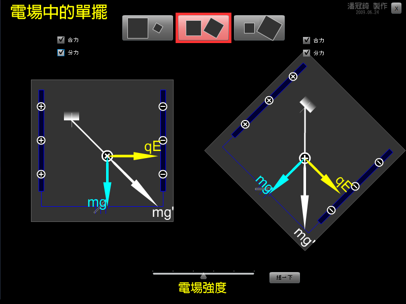

有一個考題是這樣的，一個單擺的擺錘帶正電，放在一水平的向右電場中，
將擺錘由鉛直釋放，會發生什麼事情?
我喜歡用這樣的方式思考：
擺錘同時受到固定不變的重力mg↓，以及電力qE→，
可以合起來看成等效的重力mg'向右下方。
動畫中，你可以調整電場的大小，選擇觀看的方式，還可以讓單擺晃動。
想一想：等效的重力mg'的大小該如何計算呢？它與鉛直線的夾角是多少呢？

↑動畫截圖。
檔案下載
[PC exe]